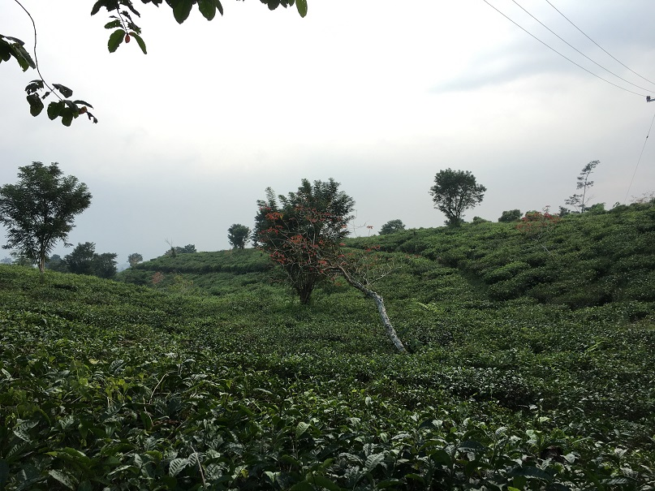

On 3rd - 5th June, Denny and I visited STT Nusa Putra in Sukabumi, West Java, Indonesia. We were invited as guest speakers for the international seminar organized by the civil engineering student union in the campus. Since day 1, the host treated us especially well: a hotel room was booked to ensure we have ample rest before the seminar. This is a huge surprise for me as I expected we would be staying in the student dormitory. Transportation is all also settled for us. Whenever we needed to go somewhere, the organizer have prepared a car to navigate the district.
Day 2 is the seminar itself. The venue was packed with not only the students from the college itself but also from other universities from other region as well (I heard the publicity team worked very hard to promote the event). Since the room was so packed, there were some students who could not register for the seminar. The seminar itself went smoothly, thanks to the organizer who had prepared everything from A to Z. The audience was amazingly attentive and responsive. Even though I felt that I was not the most interesting speaker, the audience paid close attention to the slides that I presented. I can say this is the most attentive audience that I have met. After the presentation, there are a lot of students came to us and ask insightful questions that we almost could not answer. There were also some participants asked to take picture with us. For a short moment, we felt like celebrities there.

After the seminar, Prof. Dr. Ir. H. Koesmawan, M.Sc, MBA, BBA, the head of academic in STT Nusa Putra, invited us for a sumptuous Sundanese style lunch. In short, it made me love Sukabumi even more. The taste was perfect, especially the seafood was really fresh. I think Prof. Koesmawan sensed how we enjoyed Sukabumi and sometimes jokingly asked us to stay in Sukabumi for another week. I would love to.
We then continued our journey to various tourist spots in Sukabumi. One of my favourite is the open field where we can run around or just chill under pine trees. The temperature was cool and perfect for family picnic or group activities. We can see the surrounding forest and it was really picturesque. Another one of my favourite was the tea plantation. You can walk along the trail and enjoy the fresh air in the plantation. There was a small hut where we could savour grilled corn. Fresh air and grilled corn. Superb combination!
All in all, we really enjoyed our stay in Sukabumi. To me, the main reason is the people. People in Sukabumi are friendly and approachable. A huge thanks to the organizer for the seminar, headed by Tria Mega Utami. It was really well organized and we learned a lot from the seminar as well. With this kind of initiative and enthusiasm to build international relation with other universities, I believe STT Nusa Putra will develop and advance very quickly.
Below are some photos to show you how beautiful Sukabumi is. Enjoy!


